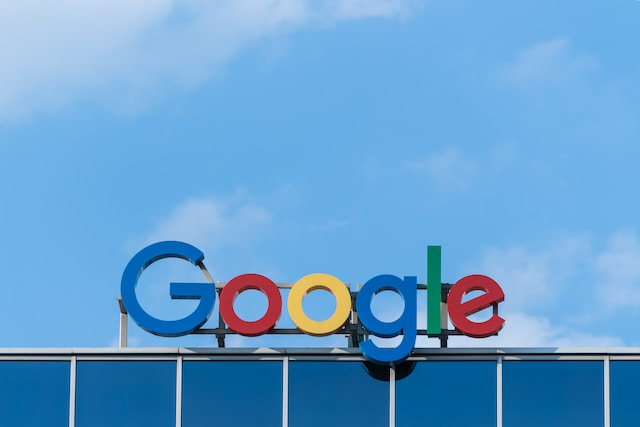

Introduction

Google has become an integral part of our lives, helping us find the information we need, connecting us with others, and providing access to an ever-expanding range of tools and services. However, the origins of Google are far from what we see today.
1. The Origins of Google
Google was founded in 1998 by Larry Page and Sergey Brin, who were Ph.D. students at Stanford University at the time. They had developed a new search algorithm, called PageRank, which revolutionized the way search engines worked.
2. Larry Page and Sergey Brin
Page and Brin's vision was to create a search engine that could provide users with the most relevant results possible, while also being simple and easy to use.
They believed that the internet could be organized in a way that made it more accessible to everyone, and they set out to make this vision a reality.
The Early Days of Google
Google's early days were humble, with Page and Brin operating the search engine out of their dorm room at Stanford. However, they quickly began to attract attention for their innovative approach to search.
The first computer server
Google's first computer server was made from LEGO bricks, which allowed them to expand their search capacity without spending a lot of money.
This approach was just one example of the company's willingness to think outside the box and find creative solutions to problems.
The original search algorithm
Google's original search algorithm, PageRank, was a major breakthrough in search technology. It allowed Google to provide more relevant search results than its competitors, and it quickly became the foundation of the company's success.
The Stanford connection
Google's connection to Stanford was a key factor in its early success. The university provided the resources and support that Page and Brin needed to develop their ideas, and it also gave them a platform to launch their search engine.
Google's Rise to Prominence
Google's rise to prominence was fueled by a series of strategic decisions and innovations that allowed the company to expand beyond search and into other areas of the tech industry.
1. The introduction of AdWords
Google's introduction of AdWords in 2000 marked a major shift in the company's business model. AdWords allowed advertisers to target specific keywords and demographics, which provided a more effective and efficient way to reach their target audience.
2. The acquisition of YouTube

Google's acquisition of YouTube in 2006 was a major milestone in the company's history. It gave Google a foothold in the video-sharing market and allowed the company to tap into the explosive growth of online video.
3. The launch of Google Maps
Google Maps, which was launched in 2005, was another major innovation that helped to solidify Google's position as a leading tech company. It provided users with a new way to explore and navigate the world around them, and it quickly became a popular tool for businesses and individuals alike.
Google's Business Model
Google's business model has evolved over time, but its core focus has always been on advertising. The company has been able to leverage its vast user base and extensive data to provide advertisers with targeted and effective advertising solutions.
1. The role of advertising
Advertising has always been at the heart of Google's business model. The company's success has been built on its ability to deliver relevant and targeted ads to its users, which has made it a popular platform for advertisers of all sizes.
2. The shift towards mobile
As smartphones became more prevalent, Google recognized the importance of mobile devices in shaping the future of the internet.
In response, the company began to invest heavily in mobile technology, developing the Android operating system and acquiring mobile ad network AdMob.
This shift towards mobile helped Google maintain its dominance in the search market, while also positioning the company for future growth in the mobile space.
3. The cloud computing revolution
In addition to its advertising and search businesses, Google has also made significant strides in the field of cloud computing. With the launch of Google Cloud Platform, the company has become a major player in the cloud market, offering a wide range of services to businesses of all sizes.
This shift towards cloud computing represents a major opportunity for Google to diversify its revenue streams and expand its presence in the technology industry.
Google's Corporate Culture
Google's corporate culture has been the subject of much attention and praise. The company's headquarters, known as the "Googleplex," is located in Mountain View, California. The campus is designed to be a place where employees can work, play, and collaborate in an environment that fosters creativity and innovation.
1. The "Googleplex" headquarters
The Googleplex is a sprawling campus that houses a variety of facilities, including offices, cafes, and recreational areas. The campus is designed to promote collaboration and creativity, with open spaces and communal areas that encourage employees to interact with each other.
One of the most notable features of the campus is the "Google bikes," which employees can use to travel between buildings.
2. Employee perks and benefits
Google is known for its generous employee perks and benefits, which include free meals, on-site gyms, and health care.
The company also provides employees with generous vacation time and flexible work hours, allowing them to balance work and personal life.
3. The company's unique management structure
Google has a unique management structure that emphasizes collaboration and transparency. The company operates on a "flat" management structure, with employees encouraged to share ideas and take initiative.
The company also has a "20% time" policy, which allows employees to spend up to 20% of their work time on personal projects and initiatives.
Google's Impact on Society
Google's impact on society has been significant, particularly in terms of the democratization of information and access to knowledge.
1. The democratization of information
Google's search engine has revolutionized the way people access information, making it easier than ever to find answers to questions and access a wide range of knowledge.
This has had a profound impact on society, making information more accessible and helping to bridge gaps in knowledge and understanding.
2. The Google Books project
Google's ambitious project to digitize millions of books has been another major contribution to the democratization of information. The project has made it possible for people around the world to access books and information that might otherwise have been out of reach.
3. Google's involvement in social and political issues
Google has also been active in social and political issues, using its resources and influence to support causes such as renewable energy and human rights. The company has also been involved in efforts to promote internet freedom and support for open access to information.
Google's Innovations
Google has been at the forefront of innovation in a variety of areas, including self-driving cars, virtual reality, and artificial intelligence.
1. The development of self-driving cars
Google's self-driving car project, now known as Waymo, has been a major innovation in the field of transportation. The technology has the potential to revolutionize the way people travel, making it safer, more efficient, and more environmentally friendly.
2. Google's forays into virtual reality
Google has also been exploring the potential of virtual reality, with projects such as Google Cardboard and Daydream. These initiatives have made it easier for people to access virtual reality content and have helped to push the technology forward.
3. The future of Google's innovation pipeline
Google has a reputation for being one of the most innovative companies in the world, and its innovation pipeline looks set to continue. Areas of focus for the company include artificial intelligence, robotics, and quantum computing.
The Future of Google
Despite its already significant influence on the tech industry, Google has continued to expand into new markets in recent years.
1. Google's ongoing expansion into new markets
One notable area of focus has been healthcare, with Google working on a number of projects related to medical research and patient care. In addition, Google has invested heavily in artificial intelligence (AI) and machine learning, which could have far-reaching implications for a wide range of industries.
2. The challenges facing Google
As Google continues to grow and evolve, it faces a number of significant challenges. One major concern is the company's size and influence, which has led to increased scrutiny from governments and regulatory bodies around the world.
In addition, Google's reliance on advertising revenue has made it vulnerable to shifts in the digital advertising landscape, including the rise of ad-blockers and the growing influence of social media platforms.
3. The potential for continued growth and success
Despite these challenges, Google's position as one of the world's most innovative and successful companies appears secure for the foreseeable future.
With its ongoing investments in new technologies and its proven track record of adapting to changing market conditions, Google is well-positioned to continue leading the way in the tech industry for many years to come.
Conclusion:
From its humble origins as a research project at Stanford University to its current status as one of the world's most influential companies, Google's story is one of innovation, determination, and success.
By staying true to its core values of innovation, user-centricity, and a commitment to making information accessible to everyone, Google has managed to change the world in profound and meaningful ways.
Whether it's through groundbreaking technologies like Google Maps and AdWords, or ambitious projects like the Google Books initiative, Google's impact on society and the tech industry will be felt for many years to come.